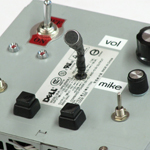
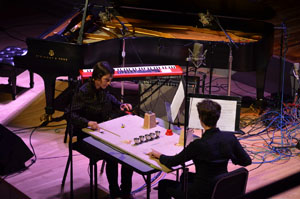
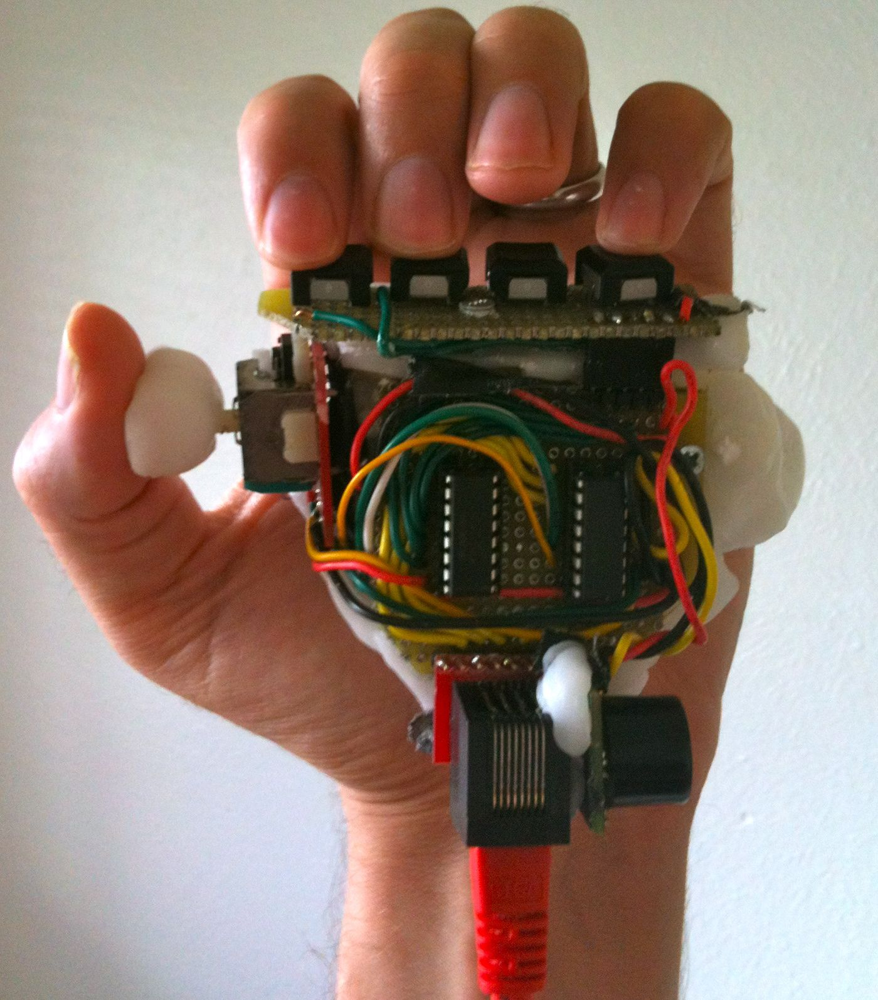

people doing strange things with electricity
This dorkbot-nyc meeting took place at 7pm on Wednesday, November 7th, 2012 at Location One in SoHo.
It featured the Oortcloudian emissions of:
 Chris Kaczmarek: Alpha-Bit
Over the past twelve years research activities in sound art and DIY audio circuits have led Kaczmarek to teach a course in Aural Electronics and form an evolving group of visual, performance and sound artists called Alpha-Bit which uses scratch built electronic and circuit bent instruments in improvised performances. As Kaczmarek has explored these subjects and participated in DIY culture, he has amassed a fair collection of experiences and battery powered boxes that make odd electronic sounds. From the basic structure of an oscillator and the value of listening to noise music, Kaczmarek brings forward not only ideas about what we are doing in these fields, but also some hypotheses about why it is important.
http://chriskaczmarek.com
http://alphabitnoise.com On Structure: twisTisch
On Structure (Jessie Marino & Natacha Diels) is a sound-centric performance duo. The New York based ensemble uses improvised and composed sounds {and the fluctuation of these sounds} to brew transferable art pieces which may ravage the realms of the performer, audience or space itself. In "twisTisch" a formal narrative of childish rituals gets pulled apart and reassembled rendering confused emotional states, rhythmic schizophrenia, and near tantrums while a specially designed "magical table top" illuminates and augments the minutia of a glitchy and dangerous game of patty cake.
http://www.onstructure.com Langdon C Crawford: new controllers
I am currently making and performing with new controllers. For a few years now I have enjoyed making music and even performing with electronics or computers, but I have not enjoyed sitting at a computer while on stage. I don't believe it makes sense to use the same physical vocabulary to type this description to perform an aggressive electronic dance beat. Instead I seek to use gestures inspired or informed by dance and instrumental performance to control the music. Additionally I wish to perform without the need for visual feedback from the computer, as I find it too easy to get caught staring at the computer instead of paying attention to other performers or the audience. My inspirations range from The Hands by Michel Waisvisz to "the drop" by contemporary EDM producers.
http://langsound.tumblr.com
NEXT MEETING: 05 2012